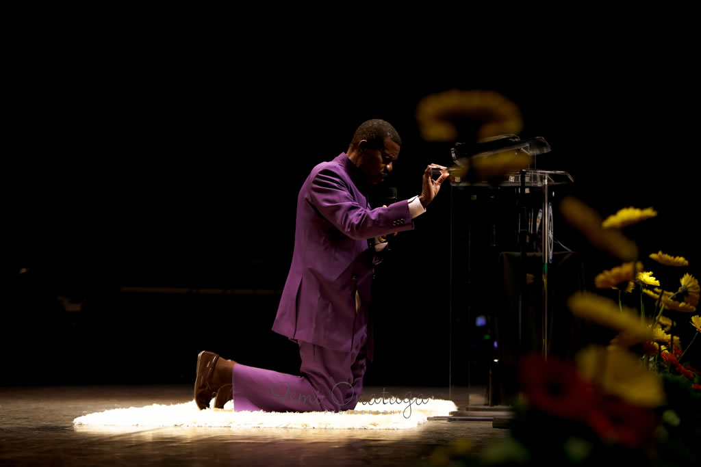

My Hero: E.A ADEBOYE
A website dedicated to my Hero the General Overseer of the Redeemed Christian Church of God Worldwide
Pastor E.A Adeboye

A website dedicated to my Hero the General Overseer of the Redeemed Christian Church of God Worldwide
Pastor E.A Adeboye
The life of Enoch Adejare Adeboye is a fulfillment of the scriptures in Zechariah 4: 10 which declare,
“despise
not the days of small beginnings”. Born in 1942 into a humble family in the village of Ifewara, Osun State located in the
South-western part of Nigeria Enoch Adeboye often humorously states that his family was so poor that even the
poor people called them poor.
As a matter of fact, he unashamedly tells his congregation that he never
owned
shoes until he was eighteen years of age. What he possessed though were physical intangibles such as focus,
consistency, diligence, ambition, a brilliant mind and a determination to succeed in life. In 1956 Enoch Adeboye
was admitted into Ilesha Grammar School, Ilesha, Osun State, Western Nigeria and as a youth he discovered
a
passion for books, and an aptitude for science and in particular the field of Mathematics. This
led to an
academic journey in the field of Mathematics against incredible odds including but not limited to finances, the
Nigerian Civil War and academic politics. By the time he was done, Enoch Adeboye had obtained not only a
Bachelors (BSc.) degree in Mathematics from the University of
Nigeria,
Nnsukka, Nigeria in 1967, but also a
Masters (MSc.) Degree in Hydrodynamics and a Doctorate Degree (PhD) in Applied Mathematics, both from the
University of Lagos,, Nigeria in 1969 and 1975 respectively.
One of the motivations for these academic achievements was Enoch Adeboye’s passionate desire to become the youngest Vice Chancellor (University President) of any one of the frontline Universities in Nigeria. It did seem that his academic ambition would be realized as his academic career flourished. However, this was not to be as a greater career awaited him in the service of the Lord. In 1967 Enoch Adeboye got married to his beloved wife Foluke Adenike Adeboye (nee Adeyokunnu). Since 1981, when he became the General Overseer of RCCG, he has been accorded the opportunity to conduct preaching missions in virtually every continents of the world. He conducts his ministry through the RCCG, including:
The RCCG was founded in 1952 by Rev. Josiah Olufemi Akindayomi
(1909–1980) following his involvement in other
churches. Rev. Akindayomi chose Enoch Adejare Adeboye as the next General overseer. Enoch Adeboye was a lecturer in
mathematics at the University of Lagos,, Nigeria, as at the time
he joined
the church in 1973.
Adeboye initially became one of the interpreters translating Akindayomi's sermons from Yoruba to English. He was
ordained a pastor of the church in 1975, and his appointment as leader (General overseer) of the church was
formalized by the posthumous reading of Akindayomi's sealed pronouncement. In 1990, Redeemed Christian Church of
God Bible School was founded
He was ordained a pastor of the Redeemed Christian Church of God in 1977. He became General Overseer of
the church in 1981. For three years, he filled the role part-time at Unilorin before giving up his university position to preach
full-time. The church, which was not well known prior to Adeboye becoming the General Overseer, has branches in
about 196 nations (as at March 2017), including more than 14,000,000 in Nigeria. Adeboye has stated that his aim
is to put a church within five minutes walking distance in developing cities and five minutes driving distance
in developed cities.
Adeboye is considered a preacher of the Prosperity gospel, a claim he does not
deny, saying that Pentecostals have such an impact because they talk of the here and now, not just the
by and
by…
while we have to worry about heaven, there are some things God could do for us in the here
and now